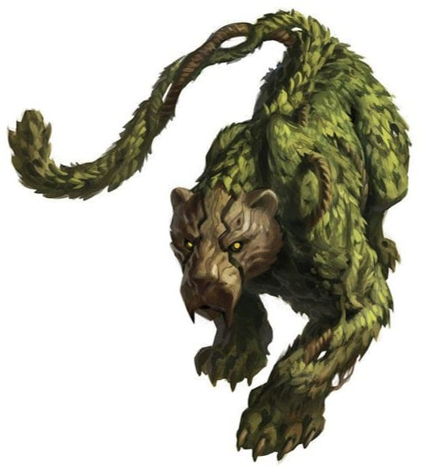
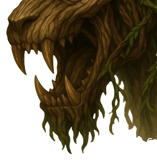
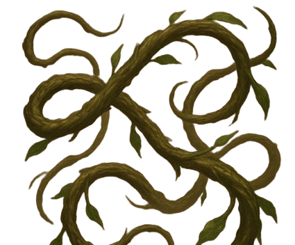

Paulo

Identidade
- Interpretado: Mestre
- Idade: 5 em idade Felina
- Altura: 90cm
- Antecedência: Forasteira
- Associação: Manuel
- Hobbs: Dormir e caçar
- Personalidade: Focada, Cuidadosa e Esperta
Historia
nascida nas florestas densas do sul, ela vivia uma vida normal, ate ela encontrar um elfo, caminhando pela floresta, não sabendo que especie era aquela, foi se aproximando lentamente, ao perceber que ele não era uma ameaça, o deixou se aproximar, dali em diante, ela o segue para onde for, o protegendo e o ajudando no puder.Aparencia
Corpo: Tem o corpo ágil e musculoso de um grande felino, semelhante a uma pantera ou onça.
Pele e pelagem: Em vez de pelos normais, seu corpo é revestido por uma cobertura de folhagens verdes, musgos e cipós entrelaçados, Algumas partes lembram galhos ou raízes.
Cabeça: Seu rosto mistura traços de felino com madeira entalhada, como se fosse esculpido a partir de uma árvore viva. Os olhos amarelos e brilhantes transmitem inteligência selvagem e vigilância constante.
Cauda: Longa, flexível e coberta por folhagem espessa.
Status e aptidões
-
Vida [27]
-
Defesa [15]
-
Força [+3]
-
Destreza [+5]
-
Constituição [+3]
-
Inteligencia [+2]
-
Sabedoria [+2]
-
Carisma [+1]
Ataques
| Ataque | Descrição |
|---|---|
|

Mordida Venenosa |
A Gataconha, Morde o Inimigo e injeta um Veneno no inimigo. Dano 2d8+6 , Apois a mordida, toda rodada do inimogo envenenado ira sofrer 1d6 + 1 De dano de Veneno |
|

Chicotes de cipos |
Ela solta cipos de seu corpo e utiliza como chicotes, chicoteando varias vezes, podendo
usar esses chicotes a media distancia. Dano: 2d6+3 alcance: 6 metros 20ft Passiva: toda vez que evoluir, aumentara em 1d |